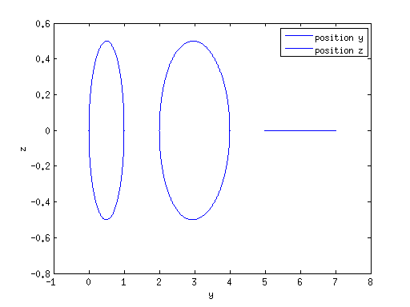
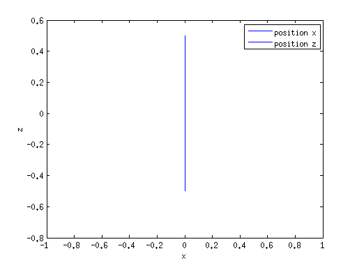
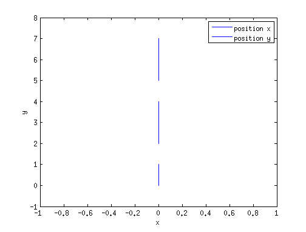
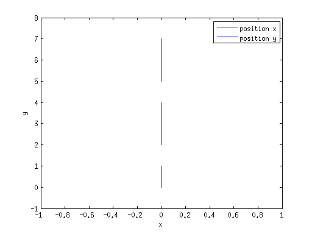
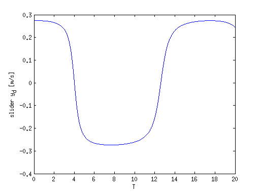
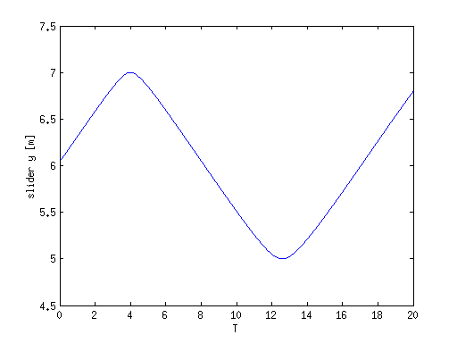
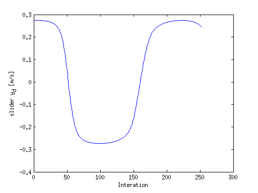
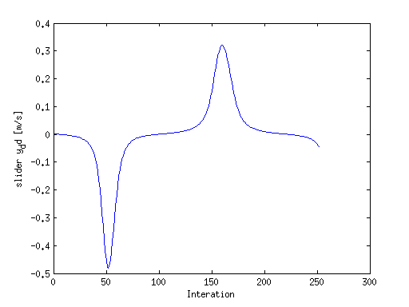
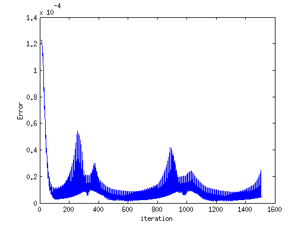
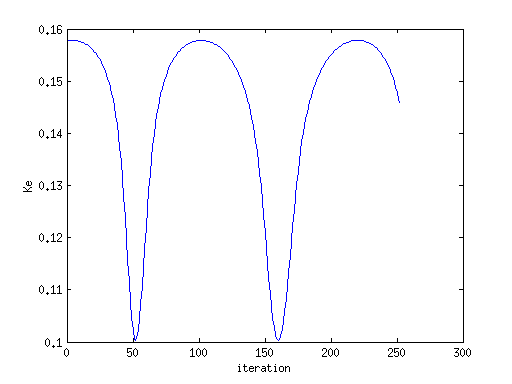

Contents
%-------------------------------------------------------------------------% %------------------------------Multibody Dynamic--------------------------% %------------------------------A toy system-------------------------------% % Problem: 3D slider-crank % Autor: Mellean % Data: 25Fev16 % Version: %-------------------------------------------------------------------------% clc clear all %%%%%%%%%%%%%%%%%%%%%%%%%%%%%%%%%%%%%%%%%%%%%%%%%%%%%%%%%%%%%%%%%%%%%%%%%%% % Glabal variables used to %%%%%%%%%%%%%%%%%%%%%%%%%%%%%%%%%%%%%%%%%%%%%%%%%%%%%%%%%%%%%%%%%%%%%%%%%%% addpath('../dynamic') global World % used to describe the world global BodyList % List with body identifiers global JointList % List with dynamic constrains identifiers global Bodies % Structure with every rigid bodies in the system global Joints % Structure with dynamics constrains global Simulation global Motors global Motor global TT Err Ke Pe
World parameters
World.gravity=[0;0;0]; % force to be applied on each body World.ElasticNet = false; % force are generated using and elastic network World.Regularistion = true; World.RFactor = 1e-15; % regularization factor World.FMNcontact = false; World.FMNdensity = false; % Contact World.n=1.5; World.e=0.6; World.k=2*10^4; World.mu=0.74; % Baumgarte Method World.alpha=5.0; World.beta=5.0; % Debugging information World.C1=[]; World.Err=[]; % Flexible Multibody system World.Flexible=false; %%%%%%%%%%%%%%%%%%%%%%%%%%%%%%%%%%%%%%%%%%%%%%%%%%%%%%%%%%%%%%%%%%%%%%%%%%%
Multibody system configuration
%%%%%%%%%%%%%%%%%%%%%%%%%%%%%%%%%%%%%%%%%%%%%%%%%%%%%%%%%%%%%%%%%%%%%%%%%%% BodyList={'Ground','C1','C2','C3'}; % list of system bodies JointList={'Fix','J1','J2','J3','Slide'}; % list of dynamic constrains %Motors={'Chank'}; Motors={}; %Ground: body C1 %Geometry Bodies.Ground.geo.m=1; % mass Bodies.Ground.flexible=false; % Inertia tensor for body Ground Bodies.Ground.geo.JP=diag([1,1,1]); % Points in body C1 Bodies.Ground.PointsList={'P1','A'}; Bodies.Ground.Points.P1.sPp=[0,0.5,0]'; % local frame coordinates Bodies.Ground.Points.A.sPp=[0,5,0]'; % B is a reference point used on the slicer % Vectors in body C1 Bodies.Ground.VectorsList={'V0','V1','V2'}; Bodies.Ground.Vectors.V0.sP=[1,0,0]'; % local frame coordinates Bodies.Ground.Vectors.V1.sP=[0,1,0]'; Bodies.Ground.Vectors.V2.sP=[0,0,1]'; % Body initial values Bodies.Ground.r=[0,0.0,0]'; % Body initial position in global coordinates Bodies.Ground.r_d=[0,0,0]'; % initial velocity Bodies.Ground.r_dd=[0,0,0]'; % initial acceleration Bodies.Ground.p=[1,0,0,0]'; % initial Euler parameters Bodies.Ground.p_d=[0,0,0,0]';% Euler parameters derivative Bodies.Ground.w=[0,0,0]'; % initial angular velocity Bodies.Ground.wp=[0,0,0]'; % initial angular acceleration Bodies.Ground.np=[0,0,0]'; % initial moment Bodies.Ground.exists=true; %Body C1 a Rod %%Geometry Bodies.C1.geo.m=1; % rod mass Bodies.C1.geo.h=1; % rod length Bodies.C1.geo.r=1; % rod radius Bodies.C1.flexible=false; % Inertia tensor for body C1 Bodies.C1.geo.JP=diag([1/12*(Bodies.C1.geo.m*(3*Bodies.C1.geo.r^2+Bodies.C1.geo.h^2)),1/2*(Bodies.C1.geo.m*Bodies.C1.geo.r^2),... 1/12*(Bodies.C1.geo.m*(3*Bodies.C1.geo.r^2+Bodies.C1.geo.h^2))]); %List of points in body C1 Bodies.C1.PointsList={'P1','P2'}; Bodies.C1.Points.P1.sPp=[0,-0.5,0]'; Bodies.C1.Points.P2.sPp=[0,0.5,0]'; %List of vectors in body C1 Bodies.C1.VectorsList={'V0','V1','V2'}; Bodies.C1.Vectors.V0.sP=[1,0,0]'; Bodies.C1.Vectors.V1.sP=[0,1,0]'; Bodies.C1.Vectors.V2.sP=[0,0,1]'; % Body initial values Bodies.C1.r=[0,0.5697,-0.4951]'; Bodies.C1.r_d=[0,0.1330,0.0187]'; Bodies.C1.r_dd=[0,-0.0057,0.0356]'; Bodies.C1.p=[-0.7548,0.6560,0,0]'; Bodies.C1.p_d=[-0.0881,-0.1014,0,0]'; Bodies.C1.w=[0.2686,0,0]'; Bodies.C1.wp=[0,0,0]'; Bodies.C1.np=[0,0,0]'; Bodies.C1.exists=true; %Body C2 a Rod %%Geometry Bodies.C2.geo.m=1; % rod mass Bodies.C2.geo.h=1; % rod length Bodies.C2.geo.r=1; % rod radius Bodies.C2.flexible=false; % Inertia tensor for body C2 Bodies.C2.geo.JP=diag([1/12*(Bodies.C2.geo.m*(3*Bodies.C2.geo.r^2+Bodies.C2.geo.h^2)),1/2*(Bodies.C2.geo.m*Bodies.C2.geo.r^2),... 1/12*(Bodies.C2.geo.m*(3*Bodies.C2.geo.r^2+Bodies.C2.geo.h^2))]); %List of points in body C2 Bodies.C2.PointsList={'P2','P3'}; Bodies.C2.Points.P2.sPp=[0,-2.5,0]'; Bodies.C2.Points.P3.sPp=[0,2.5,0]'; %List of vectors in body C3 Bodies.C2.VectorsList={'V0','V1','V2'}; Bodies.C2.Vectors.V0.sP=[1,0,0]'; Bodies.C2.Vectors.V1.sP=[0,1,0]'; Bodies.C2.Vectors.V2.sP=[0,0,1]'; % Body initial values Bodies.C2.r=[0,3.0898,-0.4951]'; Bodies.C2.r_d=[0,0.2698,0.0187]'; Bodies.C2.r_dd=[0,-0.0044,0.0356]'; Bodies.C2.p=[0.9950,0.0995,0,0]'; Bodies.C2.p_d=[0.0004,-0.0038,0,0]'; Bodies.C2.w=[-0.0076,0,0]'; Bodies.C2.wp=[0,0,0]'; Bodies.C2.np=[0,0,0]'; Bodies.C2.exists=true; %Body C3 a Rod %%Geometry Bodies.C3.geo.m=3; % rod mass Bodies.C3.geo.h=1; % rod length Bodies.C3.geo.r=1; % rod radius Bodies.C3.flexible=false; % Inertia tensor for body C3 Bodies.C3.geo.JP=diag([1/12*(Bodies.C3.geo.m*(3*Bodies.C3.geo.r^2+Bodies.C3.geo.h^2)),1/2*(Bodies.C3.geo.m*Bodies.C3.geo.r^2),... 1/12*(Bodies.C3.geo.m*(3*Bodies.C3.geo.r^2+Bodies.C3.geo.h^2))]); %List of points in body C3 Bodies.C3.PointsList={'P3','A'}; Bodies.C3.Points.P3.sPp=[0,-0.5,0]'; Bodies.C3.Points.A.sPp=[0,1,0]'; %List of vectors in body C3 Bodies.C3.VectorsList={'V0','V1','V2'}; Bodies.C3.Vectors.V0.sP=[-1,0,0]'; Bodies.C3.Vectors.V1.sP=[0,-1,0]'; Bodies.C3.Vectors.V2.sP=[0,0,-1]'; Bodies.C3.fLL=[0,0,0]'; % Body initial values Bodies.C3.r=[0,6.0403,0]'; Bodies.C3.r_d=[0,0.2735,0]'; Bodies.C3.r_dd=[0,0.0026,0]'; Bodies.C3.p=[1,0,0,0]'; Bodies.C3.p_d=[0,0,0,0]'; Bodies.C3.w=[0,0,0]'; Bodies.C3.wp=[0,0,0]'; Bodies.C3.np=[0,0,0]'; Bodies.C3.exists=true;
System dynamic constrains
%Ground joint Joints.Fix.type='Fix'; % fix body in the space Joints.Fix.body_1='Ground'; % body identifier %Sherical joint linking body C1 and body C2 Joints.J1.type='Rev2'; % spherical joint between body_1 and body_2 Joints.J1.body_1='Ground'; % body_1 identifier Joints.J1.body_2='C1'; % body_2 identifier Joints.J1.point='P1'; % point identifier Joints.J1.vector1='V0'; % vector identifier Joints.J1.vector11='V1'; % vector identifier Joints.J1.vector12='V2'; % vector identifier % Revolute joint linking body C2 and body C3 Joints.J2.type='Rev2'; % revolute joint between body_1 and body_2 Joints.J2.body_1='C1'; % body_1 identifier Joints.J2.body_2='C2'; % body_2 identifier Joints.J2.point='P2'; % point identifier Joints.J2.vector1='V0'; % vector identifier Joints.J2.vector11='V1'; % vector identifier Joints.J2.vector12='V2'; % vector identifier % Revolute joint linking body C2 and body C3 Joints.J3.type='Rev2'; % revolute joint between body_1 and body_2 Joints.J3.body_1='C2'; % body_1 identifier Joints.J3.body_2='C3'; % body_2 identifier Joints.J3.point='P3'; % point identifier Joints.J3.vector1='V0'; % vector identifier Joints.J3.vector11='V1'; % vector identifier Joints.J3.vector12='V2'; % vector identifier % Slide linking body C3 and Ground Joints.Slide.type='FixSlide'; % fix body in the space Joints.Slide.body_1='C3'; % body identifier Motor.Chank.type='linear'; Motor.Chank.body='C1'; Motor.Chank.Point='P2'; Motor.Chank.force=[0,0,0.001]'; % Tansport Multibody system information World.nbodies = length(BodyList); % number of bodies in the system World.njoints = length(JointList); % number of joints in the system World.nmotors = length(Motors); % number of motors in the system World.NNodes = 0 ; % count number of nodes in the system World.Msize = World.NNodes*6+World.nbodies*6; % mass matrix size
Mass matrix assembly
y_d=[]; nbodies=length(BodyList); World.M=zeros(nbodies*6); for indexE=1:nbodies BodyName=BodyList{indexE}; Bodies.(BodyName).g=World.gravity; O=zeros(3,3); index=(indexE-1)*6+1; Bodies.(BodyName).index=index; % body index in the mass matrix Bodies.(BodyName).forca=[]; % recursive definition for the initial force y_d=[y_d; Bodies.(BodyName).r;Bodies.(BodyName).p;Bodies.(BodyName).r_d;Bodies.(BodyName).w]; end
Start simulation
% set integration parameters t0=0; % Initial time t=20.00; % Final time step=0.001; % Time-step tspan = [t0:step:t]; % Set integrator and its parameters fprintf('\n\n ODE45\n\n') tol=1e-5; options=odeset('RelTol',tol,'Stats','on','OutputFcn',@odeOUT); tic [T, yT]= ode45(@updateaccel, tspan, y_d, options); timeode45=toc
ODE45
252 successful steps
0 failed attempts
1513 function evaluations
timeode45 =
4.7749
Graphic output: Orthogonal projections of each body
fig=figure; for index=1:nbodies BodyName=BodyList{index}; plot(yT(:,(index-1)*13+2), yT(:,(index-1)*13+3)) hold on end xlabel('y'),ylabel('z') legend('position y','position z') % print(fig,'Position y z','-dpng') hold off fig=figure; for index=1:nbodies BodyName=BodyList{index}; plot(yT(:,(index-1)*13+1), yT(:,(index-1)*13+3)) hold on end xlabel('x'),ylabel('z') legend('position x','position z') % print(fig,'Position x z','-dpng') hold off fig=figure; for index=1:nbodies BodyName=BodyList{index}; plot(yT(:,(index-1)*13+1), yT(:,(index-1)*13+2)) hold on end xlabel('x'),ylabel('y') legend('position x','position y') % print(fig,'Position x z','-dpng') hold off fig=figure; for index=1:nbodies BodyName=BodyList{index}; plot(yT(:,(index-1)*13+1), yT(:,(index-1)*13+2)) hold on end xlabel('x'),ylabel('y') legend('position x','position y') % print(fig,'Position x z','-dpng') hold off   
Graphic output:Velocity of body 4 c-of-m
indexE=4; figure; plot(T, yT(:,(indexE-1)*13+9)); xlabel('T'),ylabel('slider y_d [m/s]') %print(fig,'velocity x','-dpng') hold off
Graphic output: Position of body 4 c-of-m
indexE=4; figure; plot(T, yT(:,(indexE-1)*13+2)); xlabel('T'),ylabel('slider y [m]') %print(fig,'position y','-dpng') hold off
Graphic output:Velocity of body 3 c-of-m
figure; plot(Simulation.C3.vel(2,:)') xlabel('Interation'),ylabel('slider y_d [m/s]')
Graphic output: acceleration of body 3 c-of-m
figure; plot(Simulation.C3.acc(2,:)') xlabel('Interation'),ylabel('slider y_dd [m/s]')
Graphic output: Error on thr system constrains
fig=figure;plot( Err) xlabel('iteration'),ylabel('Error')
Graphic output: System kinetic Energy
fig=figure; plot(Ke) xlabel('iteration'),ylabel('Ke') % save('Graph.mat','yT','ListaCorpos','Corpo');